A Photoshop-grade image editor
for the web.
Canvasmith is a headless editing core plus an optional UI, built on Fabric.js. Everything on the board is a live, labelled, editable layer — images, shapes, text, paths, masks and adjustments — and every control in the UI is one public API call.
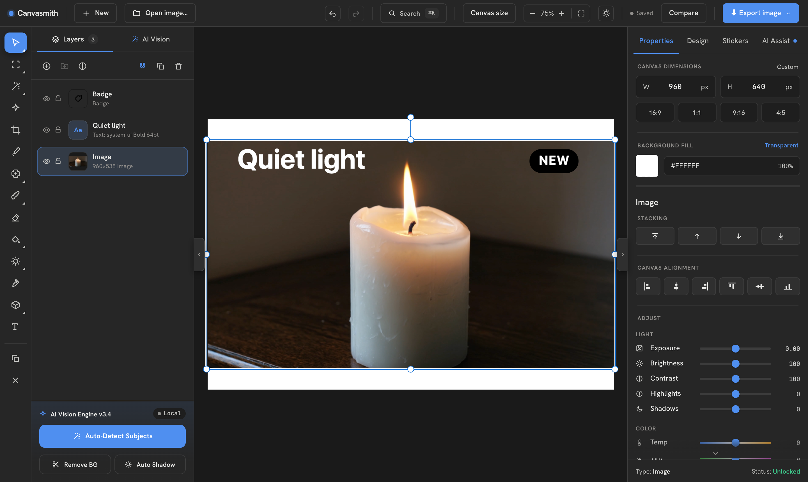
@canvasmith/core for the engine, or mount the full React UI with one script tag.Quick start
Three ways in, from zero build to fully custom UI.
1. Use the hosted editor
Open the editor and drop an image onto the canvas, or paste one from the clipboard. To open a specific image, pass its URL: ?image=<url>.
2. Drop the complete tool into a page (no build)
<div id="editor" style="height:100vh"></div>
<script src="https://cdnjs.cloudflare.com/ajax/libs/fabric.js/5.3.0/fabric.min.js"></script>
<script src="path/to/@canvasmith/react/dist/standalone.js"></script>
<script>Canvasmith.mount('#editor', { width: 1080, height: 1080 });</script>3. Headless — bring your own UI
import { Editor, GeminiProvider } from '@canvasmith/core';
const ed = new Editor({ fabric, canvasEl: myCanvas, width: 1080, height: 1080 });
ed.setTool('brush');
ed.setToolOptions({ size: 40, color: '#ff5722' });
ed.on('history', ({ past, future }) => renderUndoButtons(past, future));
ed.ai.register(new GeminiProvider()); // or your own backend provider
const png = ed.exportPNG();The vanilla demo in apps/demo is exactly this: every control there is one public API call. See Embedding & API.
The interface
Five regions, each with one job.
| Region | What it does |
|---|---|
| Top bar | New (recoverable), Open image…, undo / redo, Search (⌘K), Canvas size, zoom pill, light/dark toggle, autosave status, Compare with the first-loaded version, and Export image. |
| Tool rail (far left) | Grouped tools. A small corner caret means a flyout of siblings; press the group's letter again to cycle. Duplicate and delete sit at the bottom. |
| Left panel | Layers (the scene list: visibility, lock, thumbnails, groups, drag to reorder) and AI Vision (detected subjects and engine status). A pinned card offers Auto-Detect Subjects, Remove BG and Auto Shadow. |
| Canvas | The artboard. Direct manipulation: click to select, drag to move, handles to scale and rotate, with snapping and alignment guides. |
| Right panel | Four tabs: Properties (the active tool's options on top, then the selected layer's own properties), Design, Stickers and AI Assist. |
Both side panels collapse with the small arrows on the canvas edge. The header folds down on narrow windows.
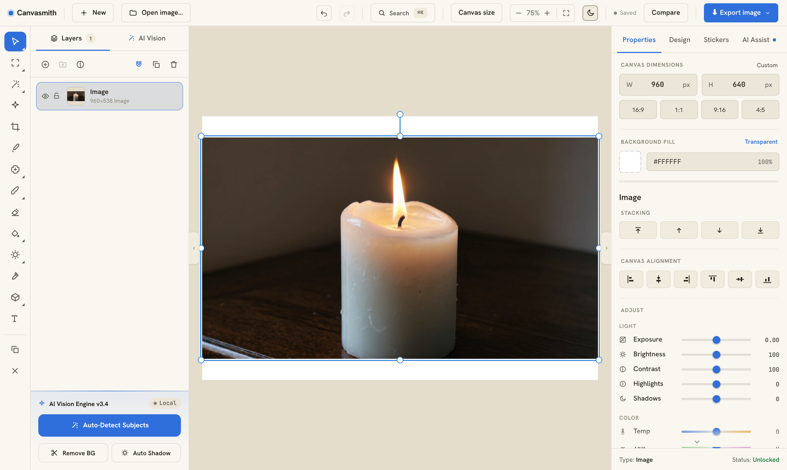
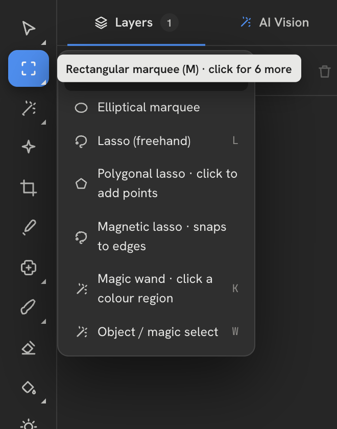
Gestures & tips
The small interactions that make the editor fast. Most are invisible until you know them.
Double-click does a lot
| Double-click on… | What happens |
|---|---|
| A group on the canvas (Move tool) | Enters the group and selects the member under the cursor. Double-click again to go one level deeper in a nested group. A plain click still selects the whole group. See the example ↓ |
| A layer name in the Layers panel | Renames the layer inline. Enter (or clicking away) saves, Esc cancels. Click the row, then click again within about 0.4 s. |
| A text layer | Edits the text in place. While typing, shortcuts are paused so ⌘C, ⌘V, arrows and ⌫ behave as text editing. |
| A pen path (Move tool) | Opens vector edit mode so you can drag points and handles. Same as pressing Enter with the path selected. |
| A point in vector edit mode | Toggles it between smooth and corner. |
| A segment in vector edit mode | Adds a new point exactly where you clicked. |
| An Adjust slider row or geometry slider | Resets just that control to neutral. See the example ↓ |
| A curve point in the Curves editor | Removes that point (the two end points stay). |
Modifier keys
| Gesture | Result |
|---|---|
| ⌥-drag a layer | Drags a copy and leaves the original where it started. |
| ⇧-click / ⌘-click a layer row | Adds it to a multi-selection; then ⌘G groups them. |
| ⇧ / ⌥ with a selection tool | Add to / subtract from the current selection. |
| ⇧ while drawing a marquee | Constrains to a square (or circle). |
| ⌥-click or ⇧-click with Clone / Heal | Sets the source point. |
| Hold Space with any tool | Temporarily pans the canvas (the hand cursor appears). |
| Mouse wheel / trackpad pinch | Zooms around the cursor (10 %–500 %). |
| Right-click | Opens the context menu for whatever is under the cursor. |
| Drag a layer near an edge or another layer | Snaps with guide lines. Toggle with the magnet in the Layers toolbar. |
Worked examples
Short, end-to-end recipes. Each one uses only what's in the demo.
Example 1 — Edit one item inside a group
You built a card from a rectangle, an avatar circle and a title, then grouped them so they move as one. Now you want to recolour only the avatar.
- Select the three layers (drag a marquee with the Move tool, or ⇧-click the rows in the Layers panel).
- Press ⌘G. A Group row appears with the members nested underneath; click the chevron to fold or unfold it.
- Click the card once: the whole group is selected, so you can move, scale or rotate it as one unit.
- Double-click the avatar. The selection drops into the group and lands on the circle itself. The Properties panel now says ellipse.
- Change its fill to any colour. Only the avatar changes; the rest of the card is untouched.
- Click empty canvas or press Esc to leave the group. ⌘Z undoes the recolour as one step.
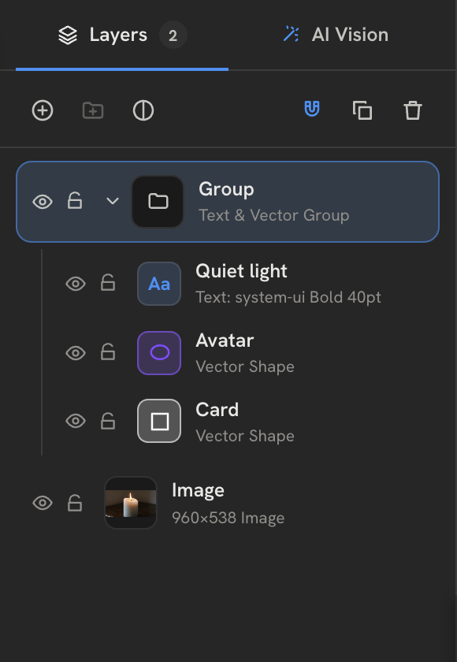
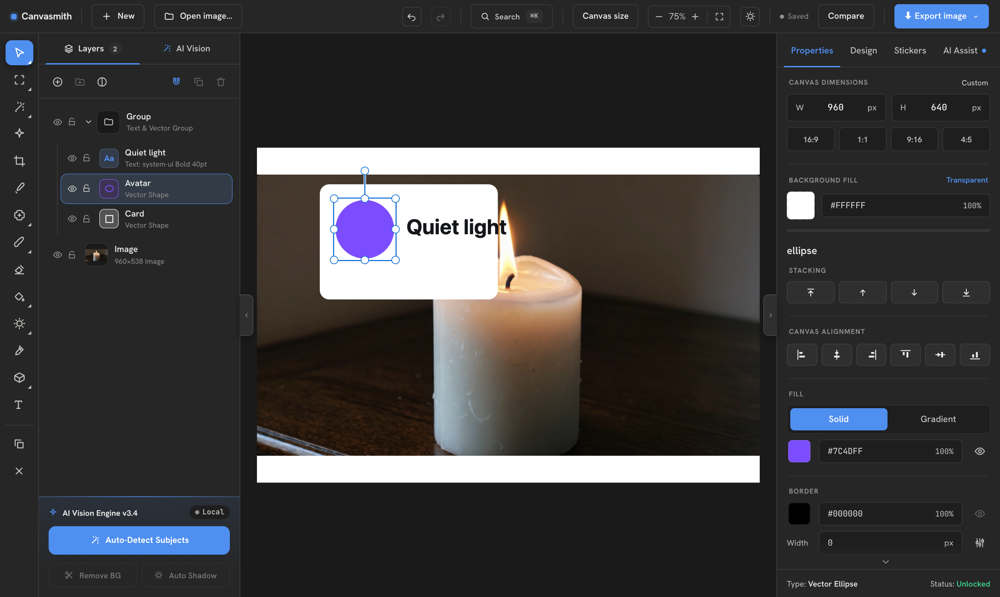
Example 2 — Build a social post in two minutes
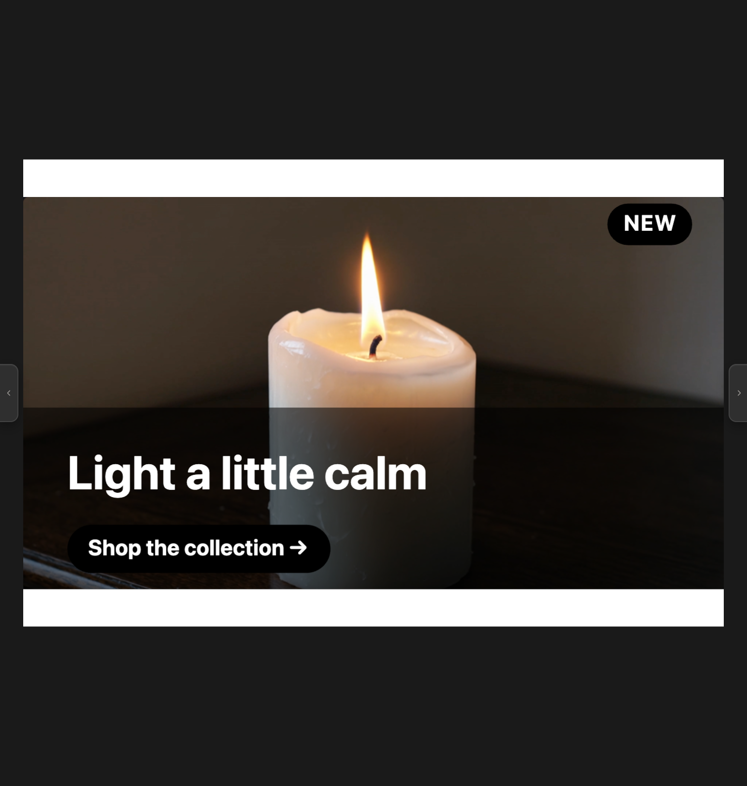
- Start from the photo: drop an image onto the canvas, or open the editor with
?image=<url>. Pick a ratio in Canvas dimensions (for example 4:5 for a feed post). - Add a scrim for legibility: pick the Rectangle tool (U), drag a band along the bottom, set the fill to black and lower the layer Opacity to about 55 %. Text on busy photos now reads clearly.
- Headline: press T, click above the scrim, type, then set size 64, weight Bold and white in the Typography panel.
- Call to action: Design → CTA drops in a ready-made pill button with an arrow (it reads “Shop now”). Drag it under the headline; guide lines snap it to the headline's left edge, and you can recolour or resize it like any layer. For custom button copy, pass
texttoaddCTAfrom code (Example 7), as this screenshot does. - Badge: Design → Badge adds a “Sale” pill; drag it to the top-right or use the alignment buttons. (This screenshot uses
addBadge(null, { text: 'New' }).) - Tidy and ship: select the scrim, headline and CTA and press ⌘G to group them as “Copy”. Then Export image → PNG at 2×.
Example 3 — Cut out a subject and put it on a new background
- Select the photo layer and click Remove BG (left panel or right-click menu). The subject is cut out as a layer mask; nothing is deleted.
- If the edge misses a bit, the banner “Editing layer mask” appears. Use Keep to paint over parts that should stay and Remove for parts that shouldn't. The cut re-runs around your strokes. Then click Done editing mask.
- Add a backdrop: the Rectangle tool, a gradient fill, then Send to back ([).
- Click Auto Shadow to seat the subject on the new background with a soft shadow.
- Changed your mind? Right-click → Remove mask and the original pixels are back.
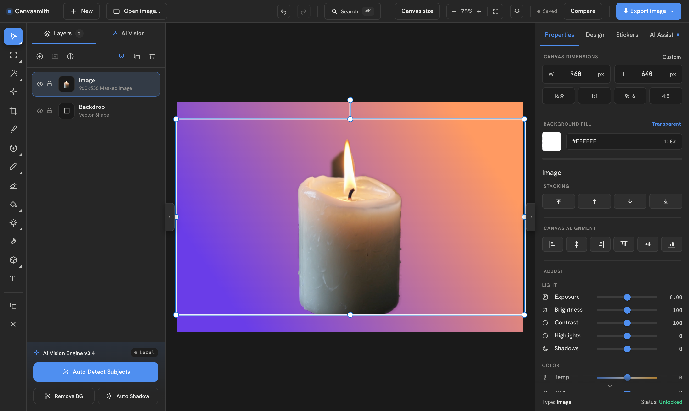
Example 4 — Colour-grade a photo non-destructively
- Select the image, open Properties → Adjust. Start with Exposure (+0.25) and Contrast (112).
- Warm it with Temp (+22) and add punch with Saturation / Vibrance.
- Open Curves for a gentle S-curve: click the line to add a point, drag it, and double-click it to remove it. Switch the R / G / B tabs to tint shadows or highlights.
- Click Compare in the top bar for a before/after view of the first-loaded version against your current edit. Close or Esc returns to the canvas.
- To grade several layers at once, click the Adjustment layer button instead: its settings apply to everything beneath it.
The finished look is the same as in the Adjustments screenshot.
Example 5 — Undo one slider without touching the rest
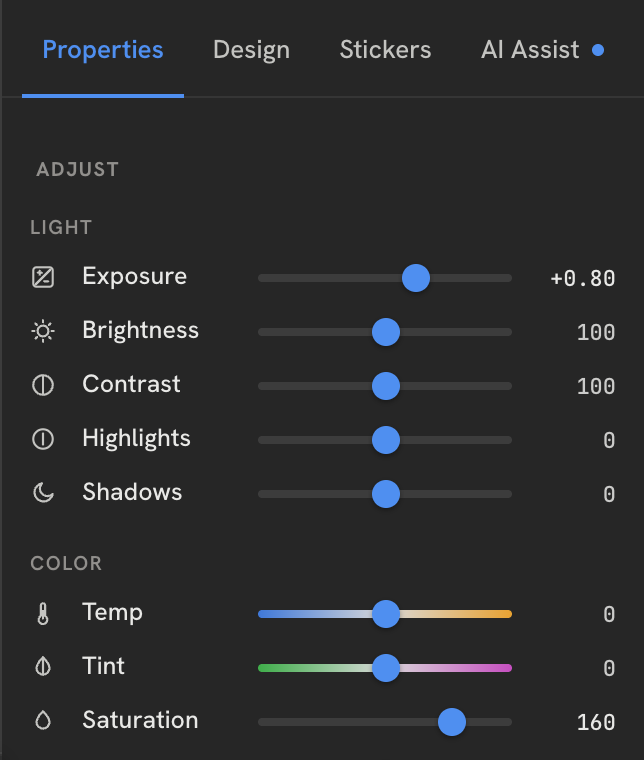
Double-click the Exposure row. Only Exposure snaps back to 0.00; Saturation stays at 160. To reset everything on that layer, use Reset at the bottom of the Adjust section. Geometry sliders behave the same way.
For a single step back instead, ⌘Z undoes one slider drag as one history step, however long the drag was.
Example 6 — Select an object and move it to its own layer
- Choose the Magic wand (object) (A) and click the candle. A marching-ants outline hugs its silhouette. Missed a bit? ⇧-click it; grabbed too much? ⌥-click. Tune with [ / ].
- Press ⌘J to copy the selected pixels to a new layer, or right-click → Cut to new layer to lift them out and leave a hole.
- Now the candle is its own layer: move it, scale it, give it a shadow, or put something behind it.
- Press Esc to clear the selection.
Example 7 — The same thing from code
Everything above is one method call on the editor, so a post like Example 2 can be built headlessly:
import { Editor } from '@canvasmith/core';
const ed = new Editor({ fabric, canvasEl, width: 1080, height: 1350 });
await ed.addImage('/photo.jpg'); // a layer, fitted to the artboard
ed.addCTA(null, { text: 'Shop the collection' }); // a ready-made button layer
ed.addBadge(null, { text: 'New' });
// react to what the user does
ed.on('selection', sel => console.log('selection', sel));
ed.on('history', ({ past, future }) => updateUndoButtons(past, future));
// read the layer tree (groups carry .children), change a layer by id
const top = ed.layers()[0];
ed.setLayer(top.id, { opacity: 0.9 });
// group the current selection, then export
ed.selectAllLayers();
ed.groupSelection();
const png = ed.exportPNG(2); // a PNG data URL at 2×
const project = ed.toJSON(); // save; restore with ed.loadJSON(project)Tool reference
Every tool, its group, and its shortcut. Pressing a group's letter again advances to the next tool in that group.
| Tool | Key | Use |
|---|---|---|
| Move / select | V | Click layers, drag, transform. Drag a marquee to multi-select. |
| Hand | H | Pan the canvas. |
| Rectangular / elliptical marquee | M | Pixel selections by dragging. |
| Lasso, polygonal lasso, magnetic lasso | L | Freehand, click-to-point, or edge-snapping selections. |
| Magic wand (colour) | K | Flood-select a colour region. Tolerance defaults to 64 for photographs. |
| Magic wand (object) | A | Click an object to grab it (OpenCV). Re-click cycles overlapping objects. |
| Object select / Hover select | Q / X | Click-to-select an object; or preview on hover, click to commit. |
| Object / magic select (box) | W | Selects the active layer's own bounding box. |
| AI insert | N | Click a spot — or fill a selection — and describe what to draw. |
| Crop | C | Scrim, thirds guides, handles. Enter applies, Esc cancels. |
| Eyedropper | I | Sample a colour into the active brush/fill. |
| Spot heal / Clone stamp / Red-eye | J / S / R | Set a source with ⌥-click or ⇧-click, then paint. |
| Brush / Pencil | B | Soft/hard painting with size, softness, opacity and colour swatches. |
| Eraser | E | Erase pixels, or hide parts of a mask. |
| Paint bucket / Gradient | G | Fill similar neighbouring colours or the selection; paint linear or radial gradients. |
| Dodge / Burn / Sponge | O | Lighten, darken, or change saturation locally. |
| Pen | P | Figma-style bezier paths. See Shapes, pen & borders. |
| Rectangle, ellipse, line, triangle, polygon, star | U | Vector shapes with fill, border, corner radius and shadow. |
| Type | T | Click to add editable text. |
Selections
Pixel selections limit where fills, gradients, brushes and AI edits land.
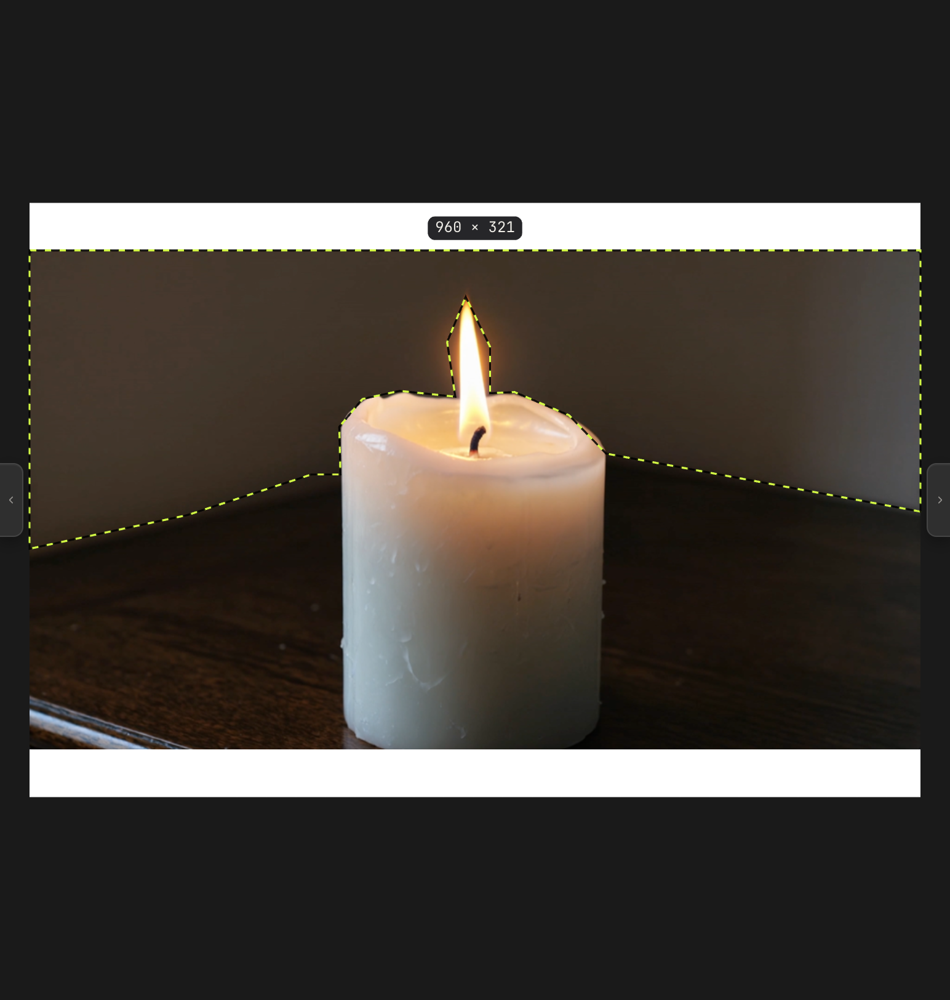
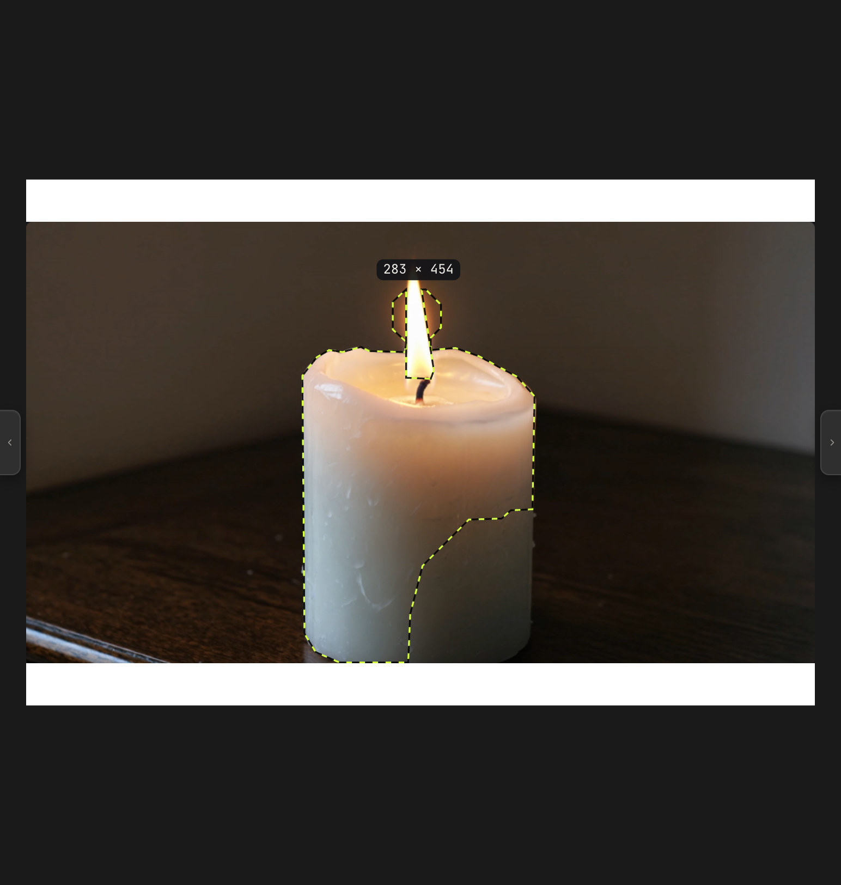
- Modify: hold ⇧ to add and ⌥ to subtract. [ / ] nudge the tolerance live.
- Selection panel (Properties tab): Expand, Contract, Select Similar Colors, Recolor selection…, and Clip layer to selection / Clear clip.
- ⌘A selects all, ⇧⌘I inverts, Esc clears.
- ⌘J copies the selected pixels to a new layer; right-click offers Cut to new layer and Delete selected pixels.
- Right-click a marquee and choose Select object to keep every object inside the box (GrabCut).
Painting & retouching
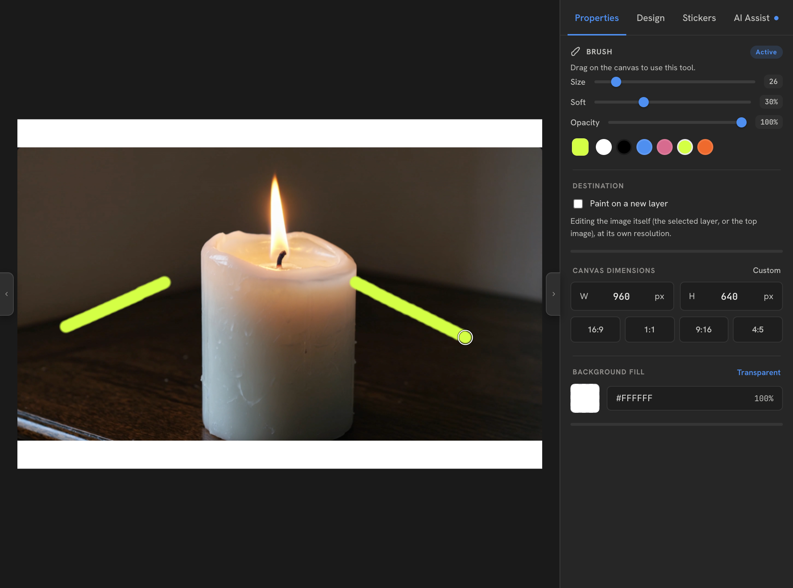
- Brush and pencil strokes land on their own paint layer, trimmed to the stroke bounds after each stroke.
- Without a new layer, painting edits the image itself at its own resolution.
- Spot heal and Clone stamp take a source point (⌥ or ⇧-click); heal blends the patch into its surroundings.
- Dodge, Burn and Sponge paint exposure and saturation changes.
Gradients
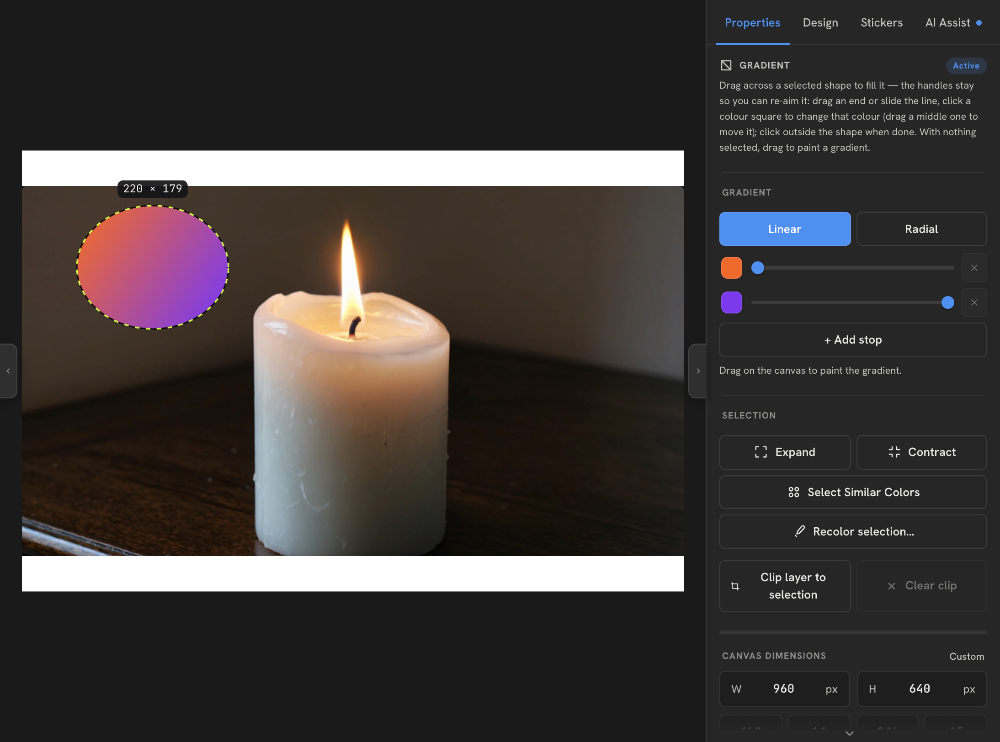
On a selected shape, the gradient handles stay live so you can re-aim: drag an end, slide the line, click a colour square to recolour (drag a middle one to move it). With nothing selected, dragging paints a gradient.
Shapes, pen & borders
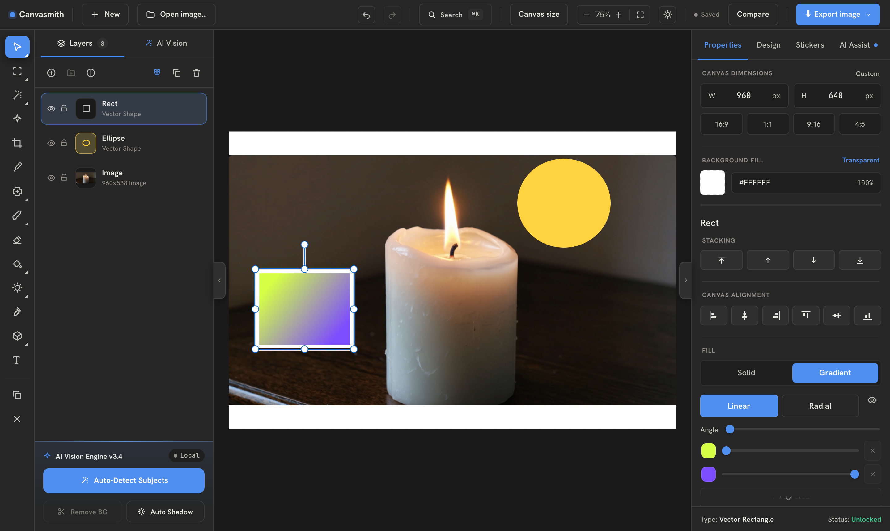
Borders
Colour, width, and a settings popover for style (solid / dashed / dotted), dash & gap, position (inside / centre / outside), caps and corner joins. The eye icons beside Fill and Border hide each independently without losing the value.
Pen tool
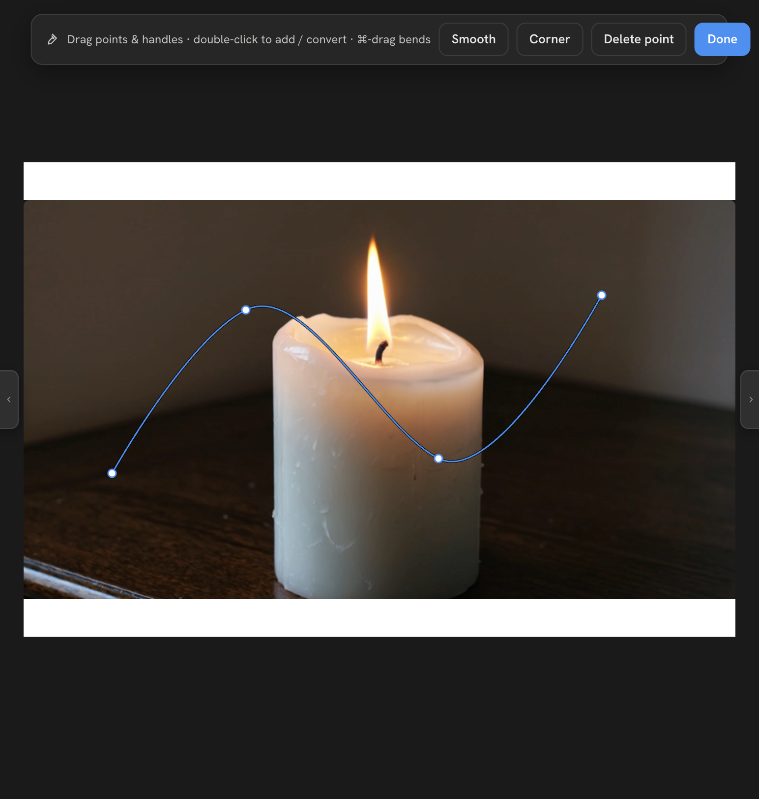
- Click for a corner point; click-drag for a curve. ⌥ breaks the handles, ⇧ snaps to 45°, Space repositions the point being placed.
- Click the first point to close into a filled shape. Enter / Esc keeps an open stroke. ⌫ removes the last point; ⌘Z steps points back while building.
- With the move tool, Enter on a selected path opens it for point editing. Double-click to add or convert a point; ⌘-drag bends a segment. Arrow keys nudge selected points (⇧ = 10 px).
Text & ad copy
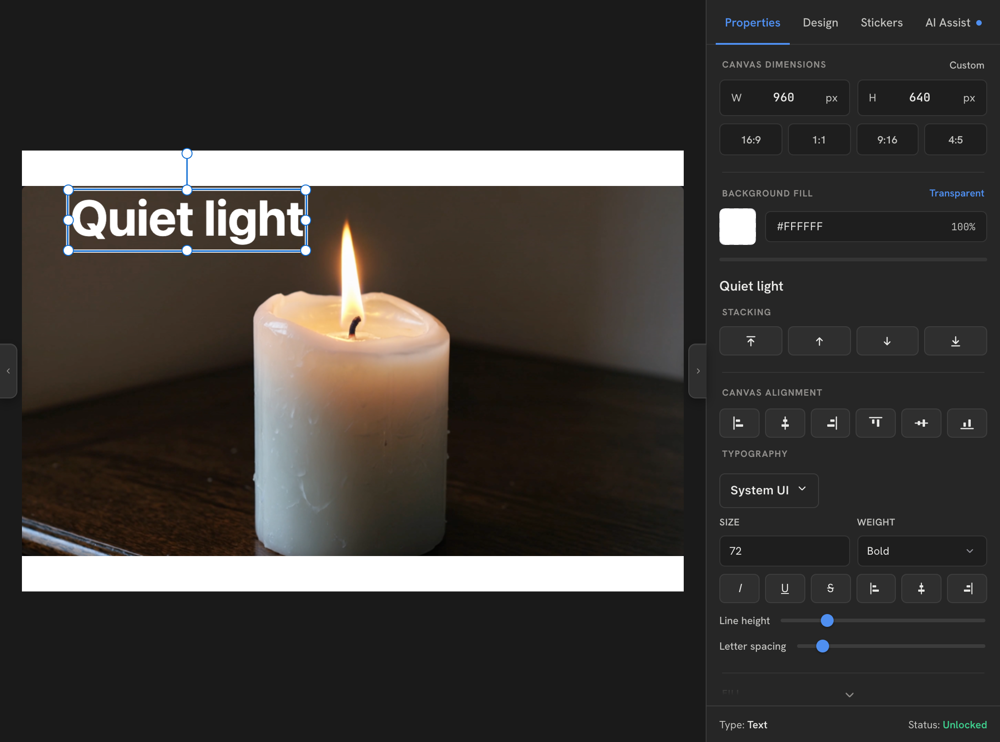
- Typography: font picker, size, weight (Light → Extrabold), italic, underline, strikethrough, alignment, line height and letter spacing.
- Ad copy chips in the Design tab insert ready-made CTA, Badge, Price and Brand lockups as grouped layers you can move, resize, recolour and shadow. Their copy is set when they're created, so pass your own text through
addCTA,addBadge,addPriceoraddBrandLockupin code. The “NEW” badge in the overview was made that way. - Auto-fit and legibility shadows keep copy readable over busy photos.
Layers, masks & groups
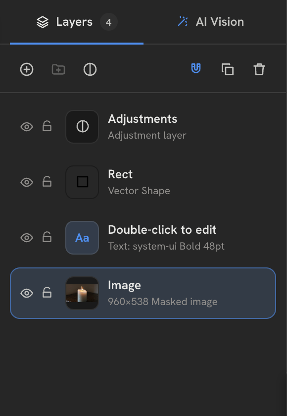
- Add layer menu, Group (⌘G / ungroup ⇧⌘G), Adjustment layer, snap-to-grid toggle, duplicate and delete live in the panel toolbar.
- Groups nest: expand or collapse them, and select members individually.
- Stacking: ] front, [ back, ⌘] forward, ⌘[ backward — or drag rows.
- Layer masks: Add mask in the context menu. Paint white to reveal, black to hide; Done editing mask returns to normal. Masks can be inverted, disabled or deleted.
- Adjustment layers apply to every layer beneath them in the stack.
- Blend modes and opacity per layer; shadow with colour, blur and offset.
- Transform: rotation, X / Y, W / H, skew, flip, centre on canvas, and six align buttons.
Adjustments & geometry
Non-destructive colour and tone controls for any image layer, applied live.
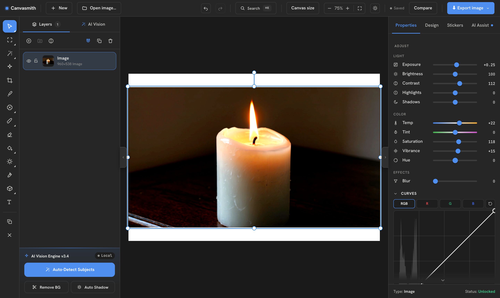
A dot beside Curves or Color mixer shows when it is active. Reset returns every control to neutral. Adjustments render before export, so the layer's pixels are never destroyed — remove the adjustment and the original is intact.
Stickers & the Design tab
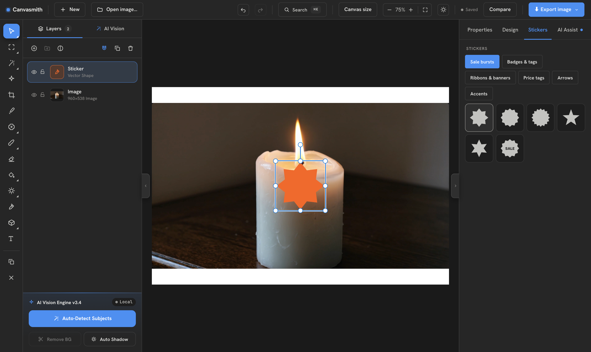
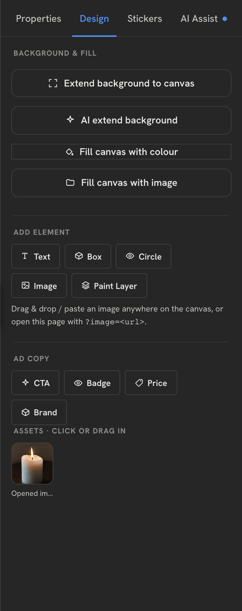
Stickers are vector shapes — recolour, resize and add borders and shadows like any other shape. In the Design tab, Extend background grows the image to fill the artboard, and Fill with colour / image sets the backdrop. Drag and drop or paste an image anywhere on the canvas to add it as a layer.
AI Assist
Generative editing is optional and provider-agnostic.
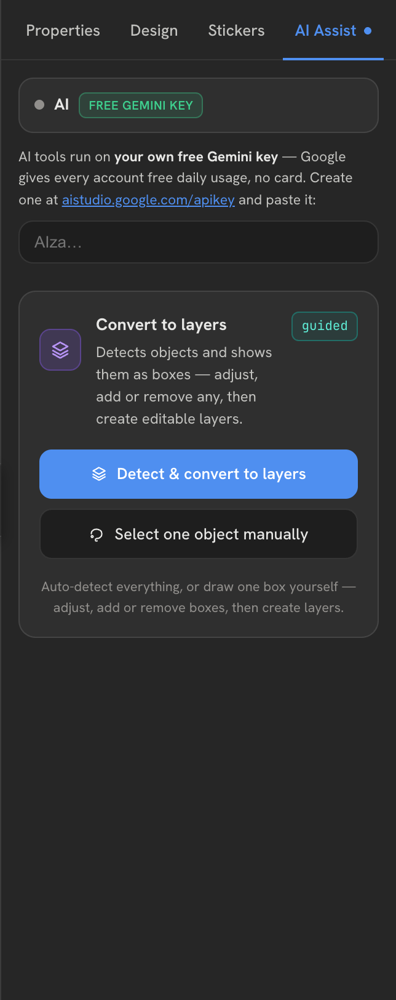
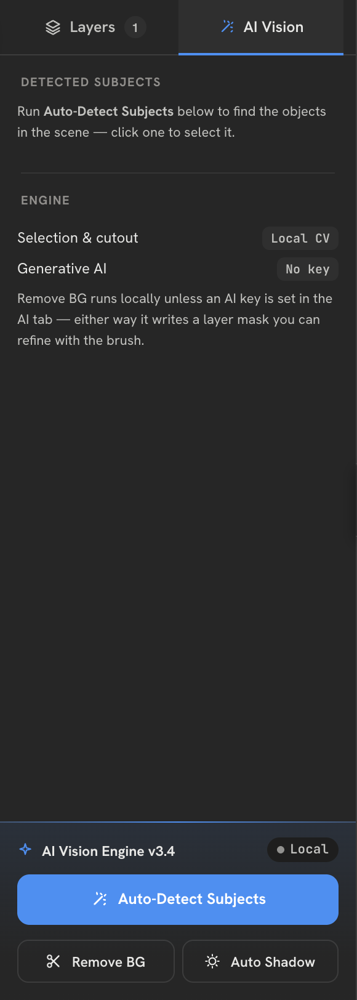
- Describe change — a prompt box scoped to Inside selection or Whole canvas, with style presets (Studio, Cinematic, Minimal, Warm) and an optional reference image.
- Enhance prompt rewrites a vague description into a clearer instruction.
- Replace background, Remove selection (erase and fill), AI insert and AI-extend background fill empty canvas around an image.
- The key is stored only in your own browser. SaaS hosts should keep keys server-side and register their own provider.
ed.ai.register({
async magicEdit(dataURL, instruction) { return myBackend(dataURL, instruction); }
});
// any subset of: magicEdit / generateImage / removeBackground / detectRegions / describeConvert to layers
Turn a flat image — a moodboard, an ad, a screenshot — into editable layers. Auto-detect everything finds objects and shows them as boxes; adjust, add or remove any, or draw one yourself with Manual. A review panel takes over the right side with a live preview, then Create layers builds a layer for each region.
- Photos are cut out and replaced; holes behind lifted objects are filled so nothing is doubled.
- Text regions become real, font-fitted text layers.
- Discarded regions are kept in a recoverable trash.
Remove background
Remove BG (left card or right-click) cuts the subject out as a layer mask, never destroying pixels. It runs offline with the built-in worker pipeline; with an AI key set, the AI is used and the offline cut stays one click away.
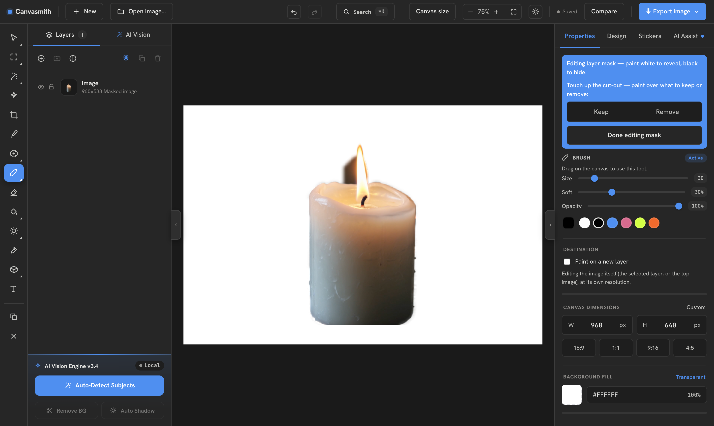
- Edit the mask afterwards: paint white to reveal or black to hide.
- On offline cut-outs, Keep / Remove touch-up brushes treat your strokes as hints and re-run the cut around them.
- Auto Shadow adds a soft drop shadow under the cut-out.
Canvas & zoom
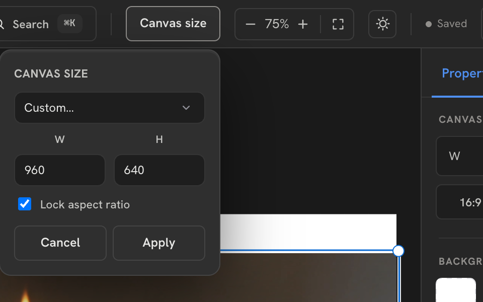
- The Properties tab always shows Canvas dimensions with quick ratios (16:9, 1:1, 9:16, 4:5) and a Background fill with hex and opacity, or Transparent.
- Zoom pill: − / +, click the percentage to reset, 0 to fit.
- Compare opens a before/after view of the first-loaded version against your current edit.
Export & projects
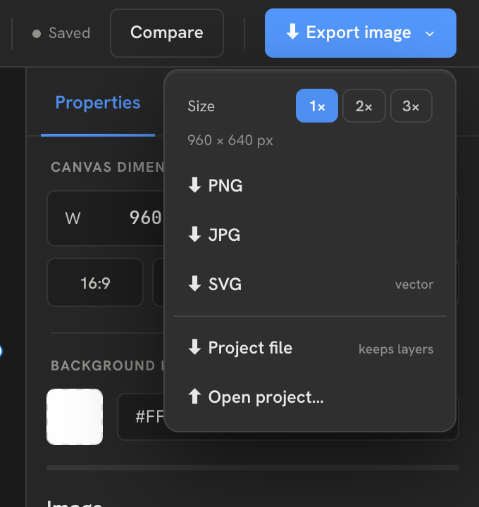
| Format | Notes |
|---|---|
| PNG | Lossless, keeps transparency. |
| JPG | Flattened on the background colour. |
| SVG | Vector export of shapes and text. |
.canvasmith project | Keeps every layer, mask and adjustment. Open project… restores it. |
Choose 1×, 2× or 3× to export at higher resolution. ⇧⌘C copies the selection as a PNG to the clipboard.
Autosave & recovery
- Your document is autosaved in the browser and restored on reload. The top bar shows Saved.
- New is recoverable: the previous document goes to a trash you can restore from, so it never silently destroys work.
- If browser storage fills up, autosave sheds the heaviest data first rather than failing.
- Export a
.canvasmithproject file for backups and moving between machines. - After a restore, undo history starts clean, so one ⌘Z never wipes the restored document.
Troubleshooting & FAQ
The AI buttons are greyed out or say unavailable
Generative features need a provider. Open AI Assist and paste a free Gemini key, or register your own provider. Selection, magic wand and Remove BG don't need one: they run locally.
The first wand or object click is slow
The OpenCV worker is loaded lazily the first time you use a computer-vision tool. A spinner shows at the cursor while it works; later clicks are quick.
The wand selects too much (or too little) on a photo
Use [ and ] to change the tolerance live, ⇧-click to add what's missing, and ⌥-click to subtract what leaked. For a whole object rather than a colour range, switch to the object wand (A).
I can't select something inside a group
A plain click selects the group. Double-click the item to enter the group, or click its nested row in the Layers panel. Locked layers can't be entered; unlock them first with ⇧⌘L.
I pressed New by mistake
New is recoverable. The previous document goes to a trash that you can restore from. See Autosave & recovery.
My shortcut does nothing
Shortcuts are paused while a text field, slider input or on-canvas text edit has focus. Click empty canvas (or press Esc) and try again.
The exported image looks different from the canvas
JPG has no transparency and is flattened onto white. Use PNG to keep a transparent background. Check the export size (1× / 2× / 3×) in the menu.
Keyboard shortcuts
On Windows and Linux, use Ctrl in place of ⌘.
| Action | Shortcut |
|---|---|
| Undo / redo | ⌘Z / ⇧⌘Z (or ⌘Y) |
| Copy / cut / paste | ⌘C ⌘X ⌘V |
| Copy as PNG | ⇧⌘C |
| Duplicate | ⌘D |
| Layer via copy (from selection) | ⌘J |
| Group / ungroup | ⌘G / ⇧⌘G |
| Select all / invert selection | ⌘A / ⇧⌘I |
| Deselect, cancel, back out one level | Esc |
| Delete layer or selected pixels | ⌫ |
| Nudge selection | Arrow keys (⇧ = 10 px) |
| Bring to front / send to back | ] / [ |
| Forward / backward | ⌘] / ⌘[ |
| Flip horizontal / vertical | ⇧H / ⇧V |
| Hide / lock selection | ⇧⌘H / ⇧⌘L |
| Wand tolerance | [ / ] while a wand or object tool is active |
| Finish polygon / magnetic lasso, pen path, crop | Enter |
| Search tools & actions | ⌘K |
| Zoom in / out / fit | + / − / 0 |
Tool letters are listed in the tool reference. Shortcuts are ignored while you type in a field or edit text on the canvas.
Embedding & API
The same engine powers the demo, the React component and every plugin.
React
import { CanvasmithEditor } from '@canvasmith/react';
<CanvasmithEditor width={1080} height={1080} image={someURL} onExport={saveToMyApp} />Core API highlights
| Area | Methods |
|---|---|
| Tools | setTool, setToolOptions, on / off |
| Layers | layers, addImage, setLayer, moveLayer, duplicateLayer, removeLayer, groupSelection, ungroupSelection, arrangeSelection |
| Selection | selectAll, invertSelection, expandSelection, contractSelection, selectSimilar, recolorSelection, clipLayerToSelection |
| Appearance | setFill, setShapeGradient, setStroke, setShadow, setTextProps, setImageFilters, setImageGeometry |
| Masks | addMask, enterMaskEdit, exitMaskEdit, invertMask, removeMask, removeBackground |
| History & canvas | undo, redo, commit, resizeCanvas, setCanvasBackground |
| Output | exportPNG, exportJPEG, exportSVG, toJSON, loadJSON |
| AI | ai.register, aiEdit, aiBgSwap, aiInsert, aiExtendBackground, detectRegions, commitRegions |
Shared helpers such as installKeybindings, buildContextMenu, installAutosave and ADJUST_CONTROLS are exported so a custom shell gets identical behaviour to the bundled one.
Plugins
.mcpb Desktop Extension that renders the editor inside the conversation as an MCP App.Repository & development
| Path | What |
|---|---|
packages/core | Headless engine; only peer dependency is fabric. |
packages/react | Drop-in UI and framework-free mount(); the standalone bundle includes React. |
apps/demo | Vanilla-JS shell over the core. |
plugins/* | Bookmarklet, browser, Claude, Gemini and ChatGPT integrations. |
adapters/ditto | Reference for plugging a SaaS backend in as the AI provider. |
docs | This page, shots/ screenshots, and the README images. |
npm install # dev deps
npm test # core unit tests (no browser needed)
npm run test:browser # Playwright suites for the vanilla and React shells
npm run build # packages/react/dist/{index.js, standalone.js}
npm run demo # serve the repo, then open /apps/demo/ or /docs/Regenerating the screenshots
Every image on this page is captured from the live demo by a script, so the docs can be refreshed whenever the UI changes. With npm run demo running:
node scripts/doc-shots.mjs # all shots → docs/shots/
node scripts/doc-shots.mjs adjust,pen # just theseRequires Playwright and a local Chrome. MIT licensed; Fabric.js is MIT, © its contributors.